|
Twierdzenie o trzech prostych prostopadłych Prosta k zawarta w płaszczyźnie P jest prostopadła do prostej l pochyłej do płaszczyzny P wtedy i tylko wtedy, gdy jest prostopadła do prostej l' będącej rzutem prostokątnym prostej l na płaszczyznę P. |
Rysunek:
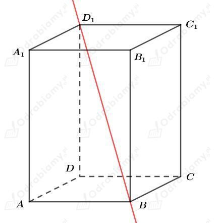
a)
Prosta BD jest rzutem prostokątnym prostej BD1 na płaszczyznę ABCD. Prosta AC jest prostopadła do prostej BD, zatem na mocy twierdzenia o trzech prostych prostopadłych jest również prostopadła do prostej BD1.
b)
Prosta BC1 jest rzutem prostokątnym prostej BD1 na płaszczyznę BCC1B1. Prosta BC1 nie jest prostopadłą do prostej B1C (są przekątnymi prostokąta niebędącego kwadratem) zatem również nie jest prostopadła do prostej BD1.
|
Twierdzenie o trzech prostych prostopadłych Prosta k zawarta w płaszczyźnie P jest prostopadła do prostej l pochyłej do płaszczyzny P wtedy i tylko wtedy, gdy jest prostopadła do prostej l' będącej rzutem prostokątnym prostej l na płaszczyznę P. |
Rysunek:
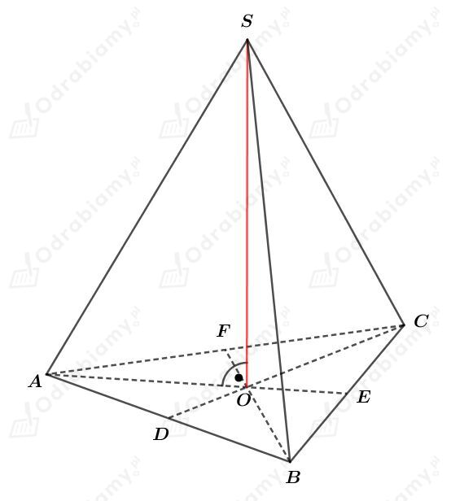
Rozwiązanie 1.
Niech dany będzie ostrosłup ABCS (jak na rysunku powyżej).
Rozważmy wszystkie pary prostych zawierających skośne krawędzie tego ostrosłupa: AS i BC, BS i AC oraz CS i AB.
Prosta AE jest rzutem prostokątnym prostej AS na płaszczyznę podstawy ABC. Prosta AE zawiera wysokość trójkąta równobocznego ABC, czyli jest prostopadła do prostej BC. Zatem na mocy twierdzenia o trzech prostych prostopadłych proste AS i BC są prostopadłe.
Prosta BF jest rzutem prostokątnym prostej BS na płaszczyznę podstawy ABC. Prosta BF zawiera wysokość trójkąta równobocznego ABC, czyli jest prostopadła do prostej AC. Zatem na mocy twierdzenia o trzech prostych prostopadłych proste BS i AC są prostopadłe.
Prosta CD jest rzutem prostokątnym prostej CS na płaszczyznę podstawy ABC. Prosta CD zawiera wysokość trójkąta równobocznego ABC, czyli jest prostopadła do prostej AB. Zatem na mocy twierdzenia o trzech prostych prostopadłych proste CS i AB są prostopadłe.
Podsumowując wykazaliśmy, że proste zawierające skośne krawędzie ostrosłupa prawidłowego trójkątnego są prostopadłe, co należało dowieść.
Rozwiązanie 2.
Rozważmy dowolną parę prostych zawierających skośne krawędzie ostrosłupa prawidłowego trójkątnego: czyli prostą zawierającą krawędź boczną i prostą zawierającą przeciwległą do niej krawędź podstawy.
Zastanówmy się jak będzie wyglądał rzut prostokątny prostej zawierającej krawędź boczną na płaszczyznę podstawy.
Zatem rzutem prostej zawierającej krawędź boczną ostrosłupa na płaszczyznę podstawy jest prosta zawierająca wysokość podstawy (przechodząca przez wierzchołek krawędzi bocznej, który zawierał się w podstawie np. rzutem prostej CS jest prosta CO), czyli jest to prosta prostopadła do prostej zawierającej przeciwległą krawędź podstawy (np. wysokość podstawy poprowadzona z wierzchołka C jest prostopadła do prostej AB), która to jest krawędzią podstawy skośną do rzutowanej krawędzi bocznej.
Otrzymujemy więc, że jeśli rozważymy dowolną krawędź boczną i przeciwległą do niej krawędź podstawy, to rzut prostej zawierającą krawędź boczną na płaszczyznę podstawy jest prostopadły do tej krawędzi podstawy. Zatem na mocy twierdzenia o trzech prostych prostopadłych proste zawierające skośne krawędzie ostrosłupa prawidłowego trójkątnego są prostopadłe, co należało dowieść.
a)
Rysunek:
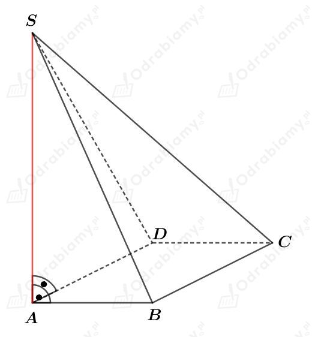
Odcinek AS jest wysokością tego ostrosłupa, zatem wiemy, że trójkąty ABS i ADS są prostokątne - co zaznaczono na rysunku.
Prosta AB jest rzutem prostokątnym prostej BS na płaszczyznę ABCD. Skoro prosta AB jest prostopadła do prostej BC, to również prosta BS jest prostopadła do BC.
Prosta DA jest rzutem prostokątnym prostej DS na podstawę ABCD. Skoro prosta DA jest prostopadła do prostej DC, to również prosta DS jest prostopadła do DC.
Zatem trójkąty BCS i DAS są trójkątami prostokątnymi.
Zatem wszystkie ściany boczne tego ostrosłupa są trójkątami prostokątnymi.
b)
Rysunek:
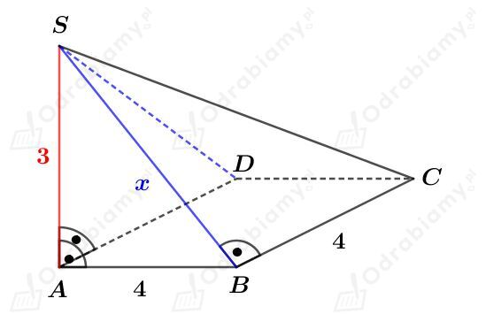
Korzystając z twierdzenia Pitagorasa dla trójkąta ABS wiemy, że
Wyznaczmy pole powierzchni podstawy. Mamy:
Wyznaczmy pole powierzchni bocznej. Mamy:
Wyznaczmy pole powierzchni całkowitej. Mamy:
Rysunek:
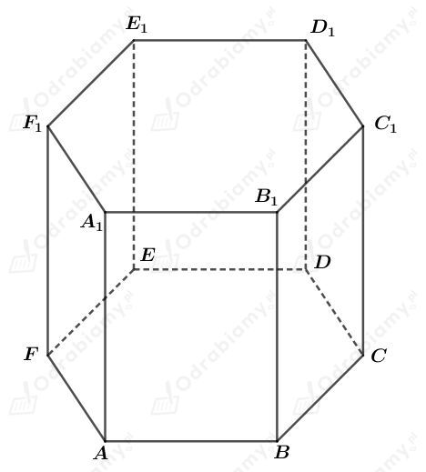
Rozpatrujemy proste wyznaczone przez dwa punkty spośród A, B, C, D, E, F.
a)
Prosta BF jest rzutem prostokątnym prostej BF1 na płaszczyznę podstawy tego graniastosłupa.
Wypiszmy proste prostopadłe do prostej BF1:
b)
Prosta BE jest rzutem prostokątnym prostej BE1 na płaszczyznę podstawy tego graniastosłupa.
Wypiszmy proste prostopadłe do prostej BE1:
c)
Prosta BC jest rzutem prostokątnym prostej BC1 na płaszczyznę podstawy tego graniastosłupa.
Wypiszmy proste prostopadłe do prostej BC1:
d)
Każda prosta zawarta w płaszczyźnie podstawy jest prostopadła do prostej BB1, ponieważ prosta BB1 nachylona jest pod kątem 90o do podstawy tego graniastosłupa.
Wypiszmy proste prostopadłe do prostej BB1:
|
Twierdzenie o trzech prostych prostopadłych Prosta k zawarta w płaszczyźnie P jest prostopadła do prostej l pochyłej do płaszczyzny P wtedy i tylko wtedy, gdy jest prostopadła do prostej l' będącej rzutem prostokątnym prostej l na płaszczyznę P. |
Dany jest graniastosłup prawidłowy ośmiokątny.
Najdłuższa przekątna tego graniastosłupa łączy wybrany punkt podstawy z przeciwległym punktem drugiej podstawy.
Naszkicujmy podstawę tego graniastosłupa.
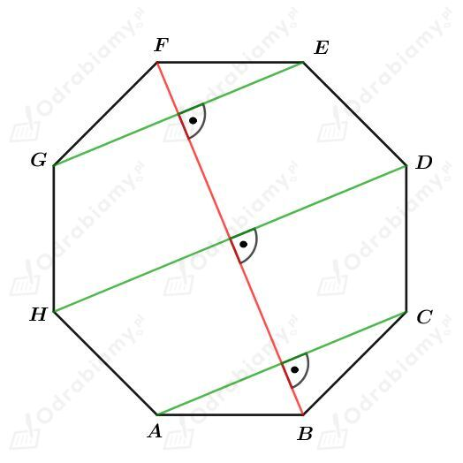
Odcinek BF jest rzutem prostokątnym najdłuższej przekątnej tego graniastosłupa na jego podstawę.
Skoro proste wyznaczone przez odcinki GE, HD, AC są prostopadłe do FB, zatem na mocy twierdzenia o trzech prostych prostopadłych, są również prostopadłe do najdłuższej przekątnej tego graniastosłupa.
Zatem są trzy takie proste.
|
Twierdzenie o trzech prostych prostopadłych Prosta k zawarta w płaszczyźnie P jest prostopadła do prostej l pochyłej do płaszczyzny P wtedy i tylko wtedy, gdy jest prostopadła do prostej l' będącej rzutem prostokątnym prostej l na płaszczyznę P. |
Dany jest graniastosłup prawidłowy pięciokątny.
Naszkicujmy podstawę tego graniastosłupa.
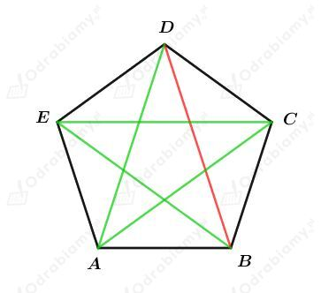
Odcinek DB jest rzutem prostokątnym przekątnej tego graniastosłupa na jego podstawę.
Odcinki AD, AC, BE, EC, DB zawierają się w prostych wyznaczonych przez dwa wierzchołki jego podstawy. Żadna z tych prostych nie jest prostopadła do rzutu prostokątnego przekątnej DB, zatem nie jest również prostopadła do przekątnej tego graniastosłupa.
Rysunek:
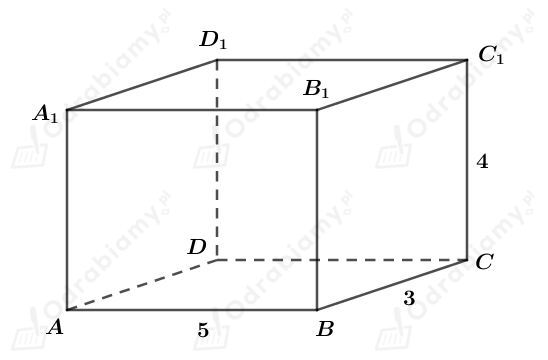
Wyznaczmy pewne długości odcinków w tym prostopadłościanie. Korzystając z twierdzenia Pitagorasa mamy:
Wyznaczmy długość przekątnej tego prostopadłościanu. Mamy:
Pierwsza możliwość
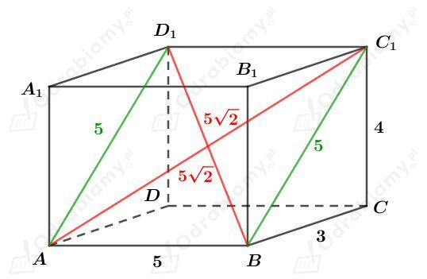
Rozważmy czworokąt ABC1D1. Każdy bok tego czworokąta ma długość 5 cm oraz długość jego przekątnej wynosi 5√2 cm. Zatem czworokąt ten jest kwadratem. Przekątne w kwadracie przecinają się pod kątem prostym, czyli przekątne AC1 i BD1 są prostopadłe.
Druga możliwość
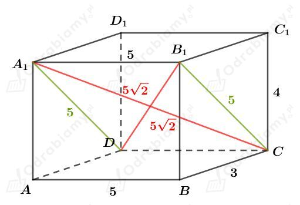
Rozważmy czworokąt DCB1A1. Każdy bok tego czworokąta ma długość 5 cm oraz długość jego przekątnej wynosi 5√2 cm. Zatem czworokąt ten jest kwadratem. Przekątne w kwadracie przecinają się pod kątem prostym, czyli przekątne A1C i B1D są prostopadłe.
Rysunek:
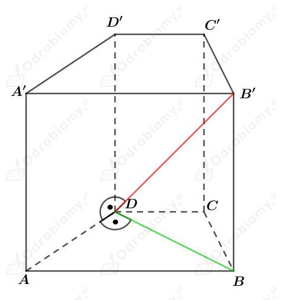
Zauważmy, że skoro prosta B'D jest prostopadła do prostej AD, to na mocy twierdzenia o trzech prostych prostopadłych, prosta DB jest prostopadła do prostej AD.
Naszkicujmy trapez będący podstawą tego graniastosłupa. Mamy:
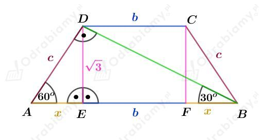
Korzystając ze związku między długościami boków w trójkącie AED o kątach 30o, 60o, 90o mamy:
oraz
Korzystając ze związku między długościami boków w trójkącie EDB o kątach 30o, 60o, 90o mamy:
więc
a stąd mamy:
Wyznaczmy pole tego trapezu. Mamy: